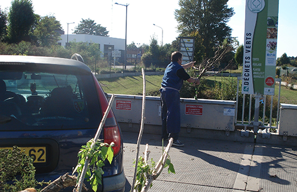

DÉCHÈTERIES COMMUNAUTAIRES
La Communauté d'Agglomération de Lens-Liévin dispose actuellement sur son territoire d’un dispositif de 3 déchèteries fixes et d'une déchèterie itinérante. Ces équipements sont destinés exclusivement aux particuliers
cliquez ici pour demander une carte d'accès en déchèterie
Déchèteries fixes
Grenay (Rue de Condé - ZAL Quadraparc), Sallaumines (Rue de Guînes) et Pont à Vendin (Rue Arthur Thomas - ZA de la Canarderie)horaires d'été : du 1er avril au 30 septembre, du lundi au samedi de 9h à 19h et le dimanche de 8h30 à 12h.
horaires d'hiver : du 1er octobre au 31 mars, du lundi au samedi de 9h à 18h et le dimanche de 8h30 à 12h.
Les véhicules de plus de 2m sont interdits sur les déchèteries de Grenay et Sallaumines
Déchèterie itinérante
horaires d'été : du 1er mars au 31 octobre de 13h à 19h.
horaires d'hiver : du 1er novembre au 28 février de 12h à 18h
-
Déchets acceptés en déchèterie fixe ?
- - encombrants,
- - gravats (briques, tuiles, ...),
- - végétaux,
- - bois,
- - métaux,
- - gros cartons,
- - textiles,
- - déchets ménagers spéciaux (peintures, piles, ...),
- - batteries,
- - pneumatiques et tôles fibrociment (uniquement à Sallaumines et Pont à Vendin),
- - déchets d'équipement électriques et électroniques.
- Déchets acceptés en déchèterie itinérante :
- - encombrants,
- - gravats (briques, tuiles, ...),
- - végétaux,
- - métaux,
- - petits appareils ménagers,
- - déchets ménagers spéciaux (peintures, piles, ...).
Les déchets d'amiante doivent être apportés dans un emballage fermé (sac poubelle, film étirable, ...).
La mention « amiante » doit être inscrite sur l'emballage.
Les usagers peuvent venir retirer du film étirable en déchèterie puis filmer leurs déchets chez eux.
Ma déchèterie la plus proche : cliquer ici. Toutes les déchèteries sont fermées les jours fériés. 
Les 10 communes desservies :
- Ablain-Saint-Nazaire / 1er et 3ème vendredi / Ancien silo A1, rue Lancino
- Aix-Noulette / 1er et 3ème mardi / Rue des Lombards - parking de l’entrepôt d’Aix
- Bouvigny-Boyeffles / 1er et 3ème lundi / Place Patoux – parking de la salle des sports
- Carency / 2ème et 4ème mercredi / Parking du stade Boursier – rue d’Ablain
- Givenchy-en-Gohelle / 1er et 3ème jeudi / Rue de l’Egalité – près du cimetière
- Gouy-Servins / 2ème et 4ème lundi / Place de la Mairie
- Servins / 2ème et 4ème mardi / Place du Jeu de Paume
- Souchez / 1er et 3ème mercredi / Route de Carency
- Villers-au-Bois / 2ème et 4ème vendredi / D58 en direction de Carency – près des bornes d’apport volontaire
- Vimy / 2ème et jeudi / Rue du Général Barbot – derrière la plateforme Intermarché
Le saviez-vous ?
Un réseau de déchèteries renforcé
Le réseau de déchèteries fixes étant toujours insuffisant, celui-ci sera prochainement renforcé avec la réalisation de 3 nouveaux équipements d’ici le printemps 2019 à Avion, Souchez et sur la zone d’activités de Quadraparc. La déchèterie de Sallaumines sera également agrandie dans le même délai. A moyen terme, d’autres déchèteries pourraient également être mises en place.
Ces déchèteries vont apporter un service de plus grande qualité aux habitants de la CALL. Elles seront plus modernes, plus performantes, avec moins d’attente. Et, surtout, elles seront dimensionnées et équipées pour prendre en charge tous les types de « déchets ménagers » (cartons, textile, D3E, gravats, restes de peinture, branchages...). Tous ces déchets seront ensuite orientés vers les bonnes filières de valorisation adaptées (recyclage, compostage, valorisation énergétique...)
Du fait du renforcement de ce réseau de déchèteries fixes et de la qualité de leur service (notamment une ouverture 7j/7), le système des déchèteries mobiles va progressivement disparaître. De même, pour les communes dotées d’une nouvelle déchèterie, la collecte des encombrants s’effectuera sur rendez-vous uniquement.
Enfin, pour répondre aux besoins des professionnels, l’agglomération va faciliter la mise en place de déchèteries professionnelles.